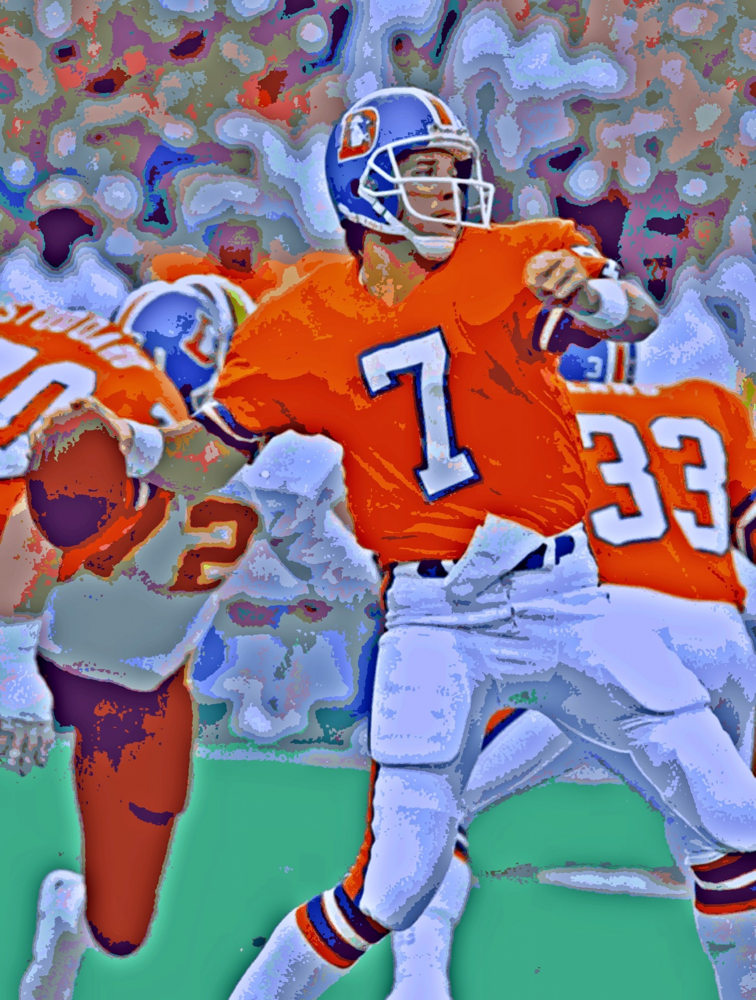
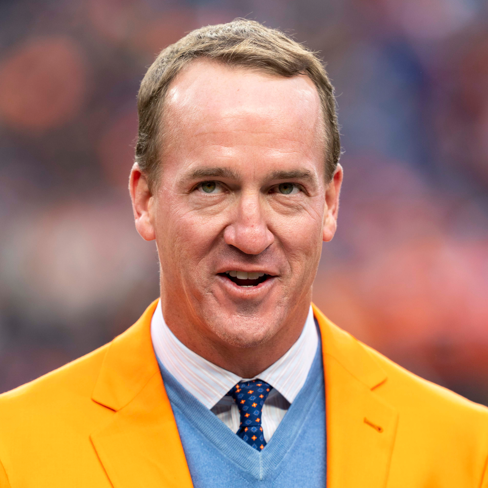
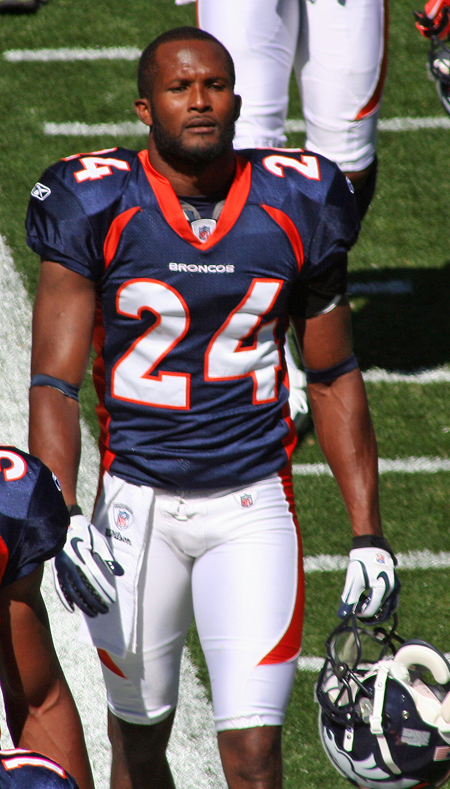
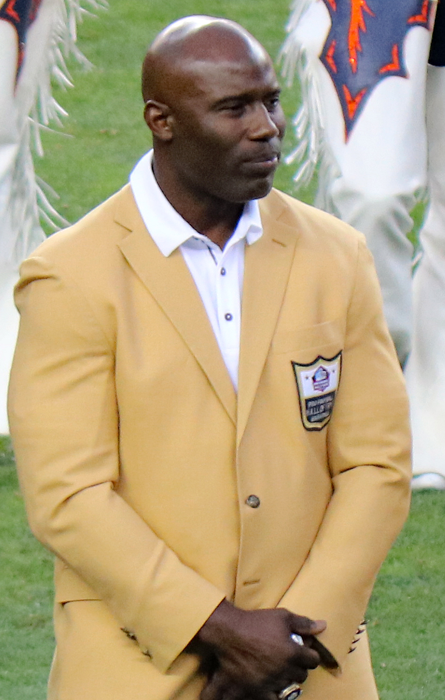
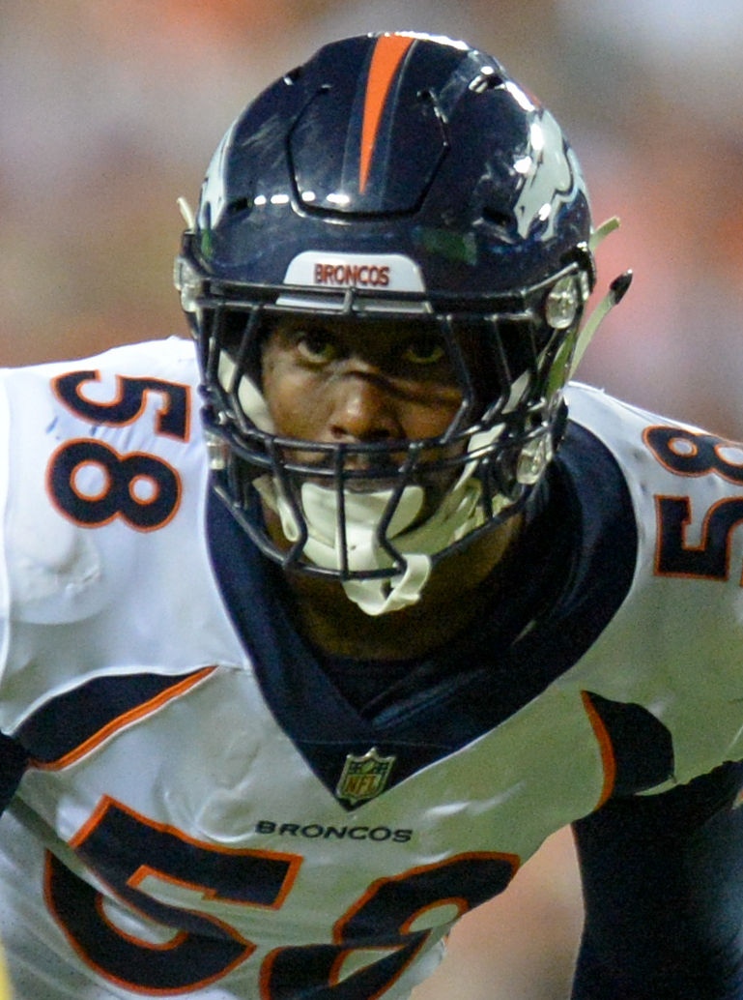
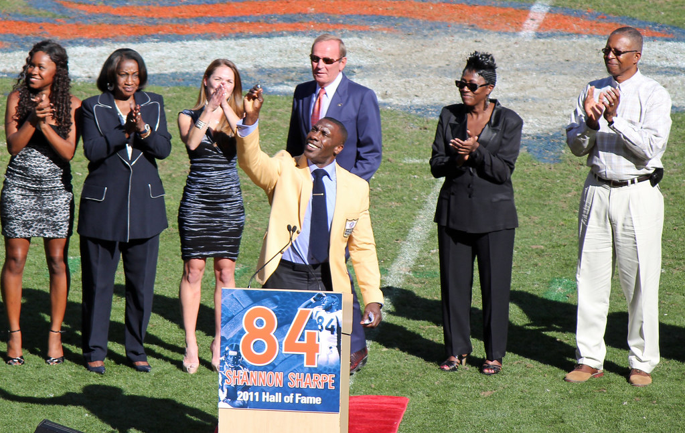
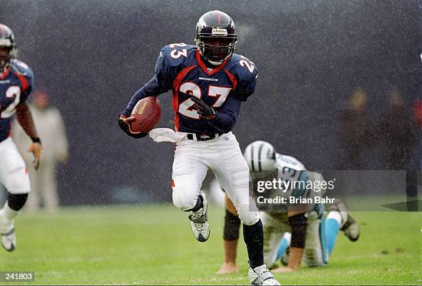
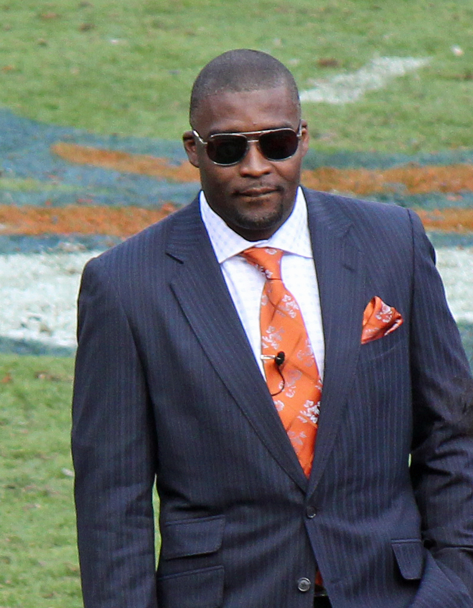
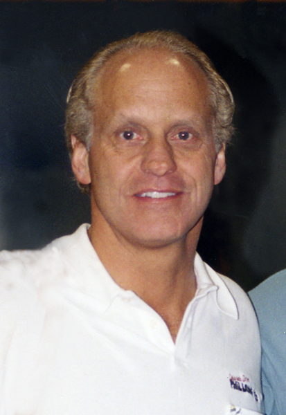

Legendary Players and Hall of Fame
The Broncos have had a rough stretch for almost a decade now, and because of that, a lot of people forget just how dominant this team used to be. When Peyton Manning retired right after winning Super Bowl 50, it pretty much closed the door on one era and opened another one that hasn't been kind to Denver. Even with the recent struggles, the Broncos actually had the third best winning percentage in the entire NFL during the 16-game era, which says a lot about how strong this franchise was for so long.
Denver has been home to two of the greatest quarterbacks the league has ever seen, along with a long list of stars who helped change the game and push the sport forward. The team's success wasn't an accident, it was built on decades of elite talent on both offense and defense.
For a long time, the Broncos didn't get much respect in the Hall of Fame, but that's changed. More of the franchise's legends have finally been recognized, and now Denver sits at 15 Hall of Famers, with 14 of them being players. With the 2025 NFL Draft coming up, it feels like the perfect time to look back at the Top 10 players in Broncos history and remember the greatness this team was built on.
Top 10 Legendary Players in Broncos History

#1. John Elway
John Elway was the face of the Denver Broncos for 16 seasons, and there's no question he's one of the greatest quarterbacks to ever play the game. His rocket arm, clutch comebacks, and ability to escape pressure kept the Broncos competitive year after year. With five AFC Championships and two Super Bowl wins, Elway's drive and leadership set the tone for the entire franchise. He didn't just play for Denver, he defined it.

#2. Peyton Manning
When Peyton Manning came to Denver, he was already a legend, but he proved he still had plenty left. He led the Broncos to two Super Bowls and brought home a championship, all while showing the same elite preparation and football IQ that made him famous. Manning's ability to read defenses and pick them apart was on another level. His professionalism and leadership made a massive impact on the team and further cemented his status as one of the best ever.

#3. Champ Bailey
Champ Bailey is widely considered one of the greatest cornerbacks in NFL history, and Denver was lucky to have him for a decade. His instincts, athleticism, and intelligence allowed him to shut down top receivers every single week. Offensive coordinators had to rethink their entire plan when Bailey was on the field. Whether in man or zone, he was a true lockdown corner who changed how Denver played defense.

#4. Terrell Davis
Terrell Davis was a major force behind the Broncos back to back Super Bowl titles. In just seven seasons, he racked up more than 7,000 rushing yards and constantly kept defenses on their heels. He had the perfect mix of power, vision, and speed, and once he hit the open field, he was gone. Even while battling injuries, Davis stayed tough and earned his spot among the best running backs the league has ever seen.

#5. Von Miller
Von Miller is one of the most feared pass rushers of his generation. From the moment he arrived in Denver, he created chaos off the edge with elite speed, power, and explosiveness. His impact helped the Broncos win Super Bowl 50, and he consistently made game changing plays when the team needed them most. Von's resume puts him up there with the top defensive players in NFL history.

#6. Shannon Sharpe
Shannon Sharpe changed the tight end position forever. His rare combination of strength, speed, and versatility made him nearly impossible for defenses to deal with. He could block, he could catch, and he always showed up in big moments. A key piece in two Super Bowl runs, Sharpe's passion and personality made him unforgettable, and one of the best tight ends to ever play.

#7. Steve Atwater
Steve Atwater brought a level of physicality and instinct to the safety position that earned him a reputation across the league. His hits were legendary, but he wasn't just a big hitter, he read plays incredibly well and always seemed to be in the right spot. Atwater was a leader in the backfield and a huge part of the Broncos defensive identity during his time in Denver.

#8. Rod Smith
Rod Smith's story is all about hard work. Coming in as an undrafted free agent, he fought his way into becoming one of the most reliable receivers in Broncos history. Crisp routes, tough catches, and clutch plays became his trademark. Smith earned everything through persistence and consistency, and he left behind a legacy built on determination and grit.

#9. Randy Gradishar
Randy Gradishar was the motor of the "Orange Crush" defense. His football IQ and ability to diagnose plays made him a nightmare for offenses. He tackled with power, moved with purpose, and anchored one of the strongest defensive units the Broncos have ever had. Gradishar helped shape Denver's defensive identity during the '70s and '80s, and his influence still shows today.

#10. Karl Mecklenburg
Karl Mecklenburg was the definition of versatility. He played all over the field and excelled no matter where the coaches put him. Whether rushing the passer, stuffing the run, or dropping into coverage, he did it all at a high level. Mecklenburg's effort, intelligence, and adaptability made him a cornerstone of Denver's defense and an example for future hybrid defenders.
Hall of Fame Members
As of 2025, the Denver Broncos have 15 members in the Pro Football Hall of Fame, with 14 of them being players. These individuals have been recognized for their outstanding contributions to the Denver Broncos franchise.
- Steve Atwater - Safety (1989-1998), Class of 2020
- Champ Bailey - Cornerback (2004-2013), Class of 2019
- Willie Brown - Defensive Back (1963-1966), Class of 1984
- Terrell Davis - Running Back (1995-2001), Class of 2017
- Brian Dawkins - Safety (2009-2011), Class of 2018
- Tony Dorsett - Running Back (1988), Class of 1994
- John Elway - Quarterback (1983-1998), Class of 2004
- Randy Gradishar - Linebacker (1974-1983), Class of 2024
- Ty Law - Cornerback (2009), Class of 2019
- Floyd Little - Running Back (1967-1975), Class of 2010
- John Lynch - Defensive Back (2004-2007), Class of 2021
- Peyton Manning - Quarterback (2012-2015), Class of 2021
- Shannon Sharpe - Tight End (1990-1999, 2002-2003), Class of 2011
- DeMarcus Ware - Linebacker/Defensive End (2014-2016), Class of 2023
- Gary Zimmerman - Offensive Tackle (1993-1997), Class of 2008